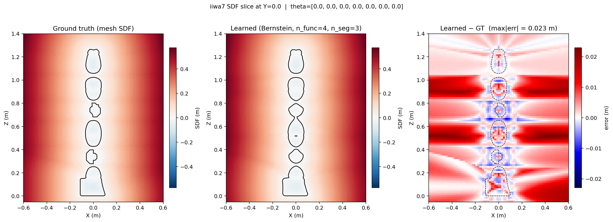

Model, then interrogate the model
Controlled simulations and explicit baselines, to understand when a new representation or controller helps — and where it fails.
02 Research
My research sits between control, motion planning, and robot learning: distance representations that tell a manipulator how close it is to collision — in the configuration space where decisions are actually made — and reactive motion generation that turns that geometry into safe, efficient movement around obstacles.
01 Master’s thesis
A configuration-space distance function (CDF) gives a manipulator something rare: a distance to collision measured directly in joint space, whose gradient can pull an entire configuration out of trouble — and, aimed at a target point, solve inverse kinematics in a single step. The catch is supervision. Training a CDF requires ground-truth distances computed in configuration space, and generating those labels is expensive enough to limit where the representation can go.
SCDF, my master’s thesis, asks whether the labels are necessary at all. It is a self-supervised, physics-informed neural distance field: instead of consuming precomputed C-space distances, training couples the network to the geometry it must respect — gradients, Eikonal-style objectives, and configuration-space reasoning — removing the labelling step entirely while preserving the one-step inverse-kinematics property that makes CDF worth having.
The second question is when learned geometry actually helps. SCDF is evaluated inside both learning-based and gradient-based motion pipelines, in controlled comparisons against JSDF, CDF, RDF, and PointNet baselines — from 2-D reinforcement-learning tasks, which test whether distance-field observations improve learning efficiency and collision avoidance, up to 7-DoF manipulators.
The thesis runs from February to December 2026 with the Robot Learning & Interaction group at Idiap / EPFL and is ongoing: representation, baselines, and evaluation tooling are all in active development.
With Sylvain Calinon, Dominik Baumann and Yiming Li

02 Reactive motion
Obstacle-aware motion generation has two strong traditions. Sampling-based optimal control — MPPI — rolls out thousands of candidate trajectories in parallel and picks its way through a cost landscape; geometrically-guided dynamical systems reshape a nominal motion around obstacles in closed form. Each has strengths the other lacks, so when should a robot optimize, and when should it simply react?
As a visiting student at LASA, I am building the benchmark to answer that: GPU-accelerated MPPI on NVIDIA cuRobo, compared systematically against geometrically-guided hybrid dynamical systems for reactive motion planning.
Alongside the benchmark, the project develops a hybrid motion-generation framework for a 7-DoF Franka Emika Panda that couples diffeomorphic transformations with implicit neural representations — Neural-JSDF and CDF — for stable obstacle avoidance. The aim is manipulability-aware motion: combining obstacle avoidance with manipulability optimization while keeping the stability and contraction properties that make dynamical systems trustworthy.
With Aude Billard and Rui Wu
03 Multi-agent planning
Before Lausanne, at Aalto’s Mobile Robotics Group, I worked on a different flavour of the same problem: many robots sharing one space, with no central choreographer. The research question was scalability — how well decentralized path planning with local coordinators holds up as the number of agents grows, compared with planning for the whole fleet globally.
I introduced and optimized hybrid velocity-obstacle methods for decentralized collision avoidance among the agents. In simulations with 12 agents, the approach improved overall planning efficiency by 10% over global planners.
A public research fork connected to this work, rl_rvo, appears in the repositories below.
With Tomasz Kucner, Mobile Robotics Group
04 Method
Controlled simulations and explicit baselines, to understand when a new representation or controller helps — and where it fails.
My current experiments combine neural distance fields, gradients, Eikonal-style objectives, and configuration-space reasoning.
Python, C++, PyTorch, ROS, Isaac Lab, PyBullet, Genesis, MATLAB, and experiment tooling all appear when the question requires them.
The habit of verifying on real systems dates back to my undergraduate thesis at SUSTech: control algorithms for the Achilles-1 wheel-legged robot, building on LQR, virtual model control, simulation, and hardware verification — more on the projects page.
05 Public code
A focused set of confirmed public repositories from my GitHub account. Research still in progress is described at a high level.
Loading repository entries…
I welcome conversations around safe manipulation, robot learning, dynamical systems, and motion planning — zimeng.wang@aalto.fi